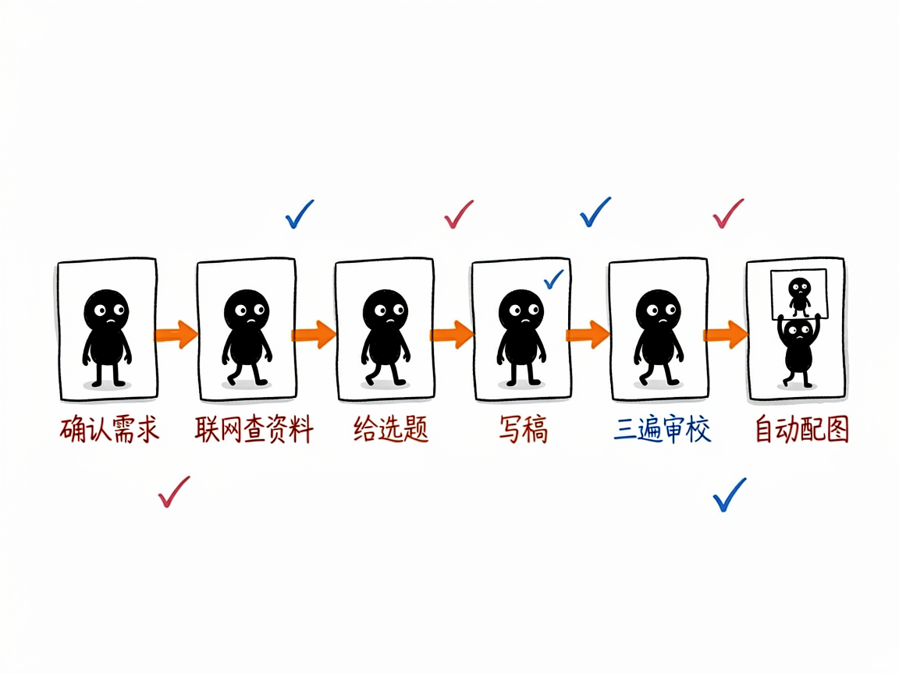
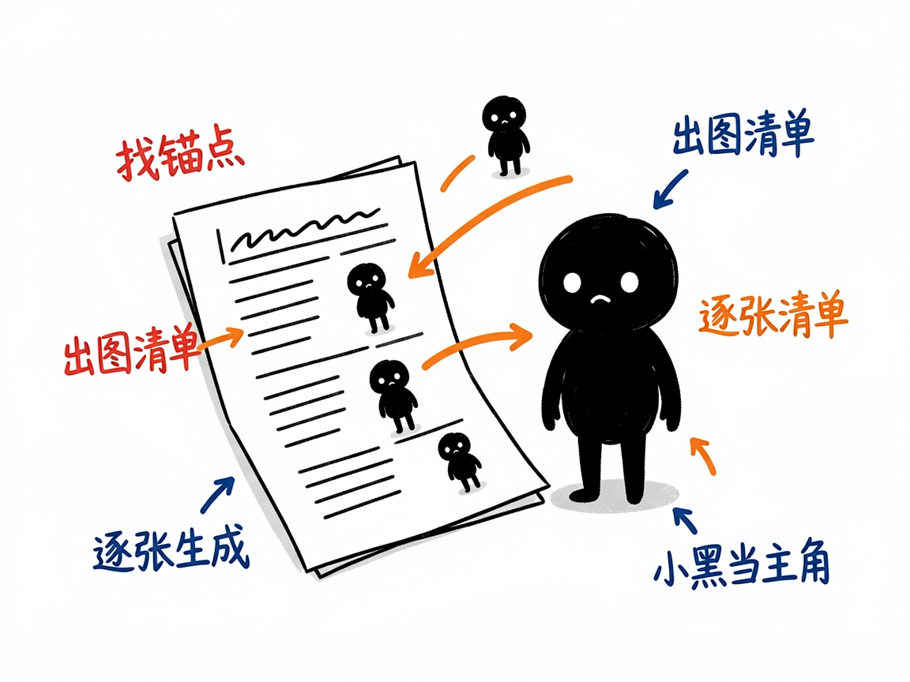

想认真运营公众号却卡在"写+配图"？这个助手从选题一路帮你写到出图 —— wechat-writer 介绍
做公众号最累的其实不是写一篇，而是"写之前想选题、写的时候调语气、写完还要满世界找配图"。尤其科技、AI、管理这类内容，既怕写得像机器稿，又怕图片风格不统一、和文章对不上。
wechat-writer 就是来解决这件事的。
你给它一个主题（或一段初稿），它还你一篇有大卫风格、经过审校、并且自动配好"小黑怪诞手绘"正文的公众号文章。它把"确认需求→联网查资料→给选题→写稿→三遍审校→自动配图"整条链路打通了，你基本不用在写和配图之间来回切。

它到底能做什么
- 覆盖全流程：需求确认、信息搜索、选题讨论、初稿写作、三遍审校、爆款优化，最后自动触发配图。遇到新概念/新产品，它强制"先搜索、再选题、再写、再配图"，不跳步。
- 给 3-4 个选题卡片（含标题、角度、类型、大纲）让你挑，而不是一上来就硬写。
- 支持"一键直出"模式：你说"直接写"，它就只做最小假设直接出完整稿，省去来回问答。
- 也支持只改稿、只审校、只优化标题/开头/结尾，或"只配图"不碰文字。
- 默认带联网检索，涉及时间、数据、产品能力等可核查事实时，会在文末给出参考来源清单，不瞎编。
- 写审校完成后自动配图：分析文章的"认知锚点"（核心判断、前后对比、流程等），产出配图清单（shot list），逐张生成小黑风格配图并插回文章。
一个具体例子
最常用的交互式写法，给一段需求即可：
主题：中小公司怎么用 AI 提效
目标读者：企业管理者 + 职场人
字数：2000 左右
是否需要联网检索：需要
是否需要配图：需要
AI 会先给选题卡 → 你选定 → 出稿 → 三遍审校 → 自动生成 4-6 张小黑配图插入 → 存成 articles/YYYY-MM-DD_标题.md。
如果你只想要图，也可以说"给这篇已有文章只配图"，它会走配图流程、不动文字。

谁适合用
- 公众号作者（尤其科技/AI/管理/职场方向），想稳定产出还带统一配图。
- 企业市场/运营，需要周期性发文又缺设计和写作人力。
- 知识博主，想把观点文章写得更有个人风格、更"不像 AI 写的"。
一点说明 / 小提示
它默认是大卫的风格（重真实经历、清晰结构、轻评论、金句收束），且默认开启配图。如果你不想配图，说一句"不要配图"它就会跳过。配图能力是"借"了另一个 skill（ian-xiaohei-illustrations）来实现的，要那个 skill 也在才能跑。它是给"会调 AI Agent 的人"用的 skill（放在 skills 目录由 AI 加载），不是双击打开的 App；配图依赖外部生图接口，具体可用性以项目 SKILL.md 为准。